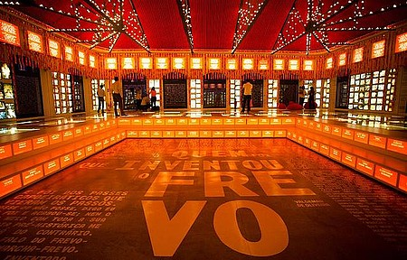
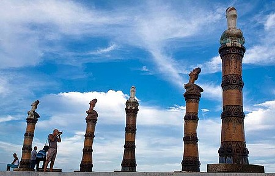

Paço do Frevo
O Paço do Frevo é um museu dedicado à preservação, divulgação e valorização do Frevo, um dos principais ritmos e símbolos da cultura pernambucana, especialmente do Recife. Localizado no Recife Antigo, o Paço do Frevo foi inaugurado em 2012 e se tornou um dos principais centros de difusão cultural da cidade.
Características Principais
- O Paço do Frevo oferece uma experiência imersiva e interativa, com exposições que permitem ao visitante conhecer a história do Frevo, desde suas origens até a sua contemporaneidade
- O museu conta com um acervo riquíssimo, que inclui fantasias, adereços, partituras, vídeos e registros sobre grandes nomes do Frevo
- Além das exposições, o local também oferece oficinas e apresentações musicais, proporcionando uma verdadeira experiência cultural aos visitantes
Parque de Esculturas Francisco Brennand
O Parque das Esculturas é um museu a céu aberto localizado no Cais do Sertão, na região do Recife Antigo, ao lado do Paço do Frevo. É um dos locais mais emblemáticos para a arte e cultura na cidade. O parque abriga uma coleção de esculturas que fazem parte do patrimônio artístico e cultural da cidade de Recife.
Características Principais
- O parque exibe várias esculturas contemporâneas, a maioria das quais foi criada por artistas pernambucanos. O destaque é a grande escultura "O Pescador" do renomado artista Francisco Brennand.
- O parque é um ambiente livre, com esculturas espalhadas ao longo de uma extensa área, permitindo aos visitantes interagir diretamente com as obras de arte
- Além das esculturas, o parque oferece uma linda vista para o porto do Recife, proporcionando um ambiente relaxante e único.